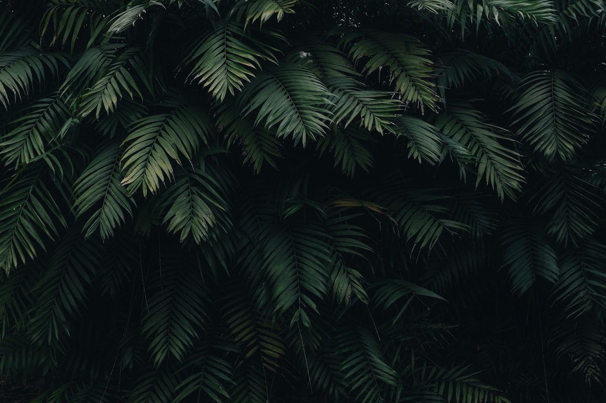

Ni arrosage, ni lumière, ni taille — et pourtant du végétal authentique. Le stabilisé est la réponse des lieux sans arrivée d'eau, à condition d'en accepter les limites, qui sont réelles.
Par Sébastien Monnier, fondateur de Verdalys · Mis à jour le

La stabilisation n'est ni un séchage, ni une plastification. C'est une substitution : la circulation de sève est remplacée par une solution de conservation qui fige la plante dans son état de fraîcheur.
Les végétaux sont cueillis à maturité, quand le feuillage a sa meilleure tenue. La qualité du résultat final se joue en grande partie à ce stade : une plante récoltée trop tard ne se stabilise jamais correctement, quel que soit le soin apporté ensuite.
La plante est placée dans une solution à base de glycérine végétale et d'eau, additionnée de colorants alimentaires. Par capillarité, cette solution remplace progressivement la sève. La plante cesse alors de vivre, mais conserve sa souplesse, son volume et son toucher.
Après imprégnation, les végétaux sont égouttés, séchés et triés par calibre et par teinte. C'est cette étape qui détermine l'homogénéité d'un mur : un lot mal trié se voit immédiatement sur une grande surface uniforme.
L'atelier compose le tableau à la main sur un support rigide — panneau, cadre bois ou aluminium — en jouant les épaisseurs et les teintes. Les modules sont ensuite fixés au mur sur site. Une dizaine de m² se pose généralement en une à deux journées.
Les murs végétaux stabilisés suppriment d'un coup les trois postes qui compliquent un projet de mur végétal vivant. C'est sa raison d'être, et ce qui explique qu'il équipe l'essentiel des boutiques et des salles de réunion aveugles.
Pas d'alimentation en eau, pas d'évacuation, pas de bac de récupération, pas de pompe. Aucun risque de fuite sur une cloison ou un plancher, ce qui lève l'essentiel des réserves d'un bailleur ou d'un syndic.
Une pièce borgne, un couloir, une salle de réunion sans fenêtre : le stabilisé s'y comporte exactement comme ailleurs. Il évite donc l'éclairage horticole, poste qui pèse 100 à 300 €/m² sur un mur vivant.
Là où un mur naturel demande 80 à 200 €/m²/an, le stabilisé n'a besoin que d'un dépoussiérage occasionnel. Sur cinq ans, l'écart de coût de possession compense largement l'écart de prix d'achat initial.
Les trois technologies se ressemblent en photo. Sur le terrain, elles n'ont ni les mêmes contraintes, ni le même coût sur la durée.
| Critère | Stabilisé | Naturel vivant | Artificiel |
|---|---|---|---|
| Nature du végétal | Végétaux réels conservés | Plantes vivantes | Feuillage synthétique |
| Prix posé | 400 – 900 € HT/m² | 600 – 1 200 € HT/m², hors irrigation | 150 – 400 € HT/m² |
| Arrivée d'eau | Aucune | Irrigation automatique | Aucune |
| Lumière | Aucune | Naturelle ou éclairage horticole (100 – 300 € HT/m²) | Aucune |
| Entretien | Dépoussiérage 1 à 2 fois par an | Contrat de 80 – 200 € HT/m²/an | Dépoussiérage régulier |
| Extérieur | Non | Oui, avec des plantes adaptées | Oui, si traité anti-UV |
| Régulation de l'hygrométrie | Non | Oui | Non |
Le détail de chaque technologie : mur végétal naturel, mur végétal artificiel, et notre méthode pour choisir le bon mur.
Bien placé, un mur stabilisé tient une décennie ; mal placé, il se dégrade en une saison. Le choix se fait donc d'abord sur le lieu.
Quatre familles reviennent dans presque toutes les compositions. Elles se combinent pour créer du relief : c'est le jeu des épaisseurs qui distingue un mur soigné d'un tapis uniforme.
Le lichen scandinave apporte une texture fine, légèrement irrégulière, dans une large gamme de verts. La mousse plate, plus mate, sert de fond continu. Ce sont les végétaux les plus économiques : un mur entièrement en lichen se situe dans le bas de la fourchette de prix.
Les coussins sphériques créent le volume et les ombres portées qui donnent sa profondeur à la composition. Une densité élevée en mousse boule fait nettement monter le prix au m², mais c'est elle qui produit l'effet « forêt » recherché dans les projets haut de gamme.
Fougères stabilisées, feuilles d'eucalyptus, ruscus, amaranthe : elles cassent la régularité du fond et introduisent des lignes. On les dose avec parcimonie — trop de feuillages fins fait vieillir visuellement une composition.
Rondins, branchages, écorces ou fleurs stabilisées servent de ponctuation, notamment en hôtellerie et en restauration. Ils permettent aussi d'intégrer une signalétique ou un logo découpé sans rompre l'unité végétale. Voir aussi notre guide quelles plantes choisir.
Fourchette de référence : 400 à 900 € HT le m² posé. La densité de la composition et le format du cadre expliquent l'essentiel de l'écart.
| Type de composition | Rendu | Prix indicatif HT posé |
|---|---|---|
| Lichen seul, cadre standard | Texture fine, teinte unie | 400 – 550 €/m² |
| Mousse plate et lichen mêlés | Fond mat, léger relief | 500 – 650 €/m² |
| Composition mixte avec mousse boule | Volume marqué, ombres portées | 650 – 800 €/m² |
| Composition dense sur mesure | Fougères, feuillages, bois, logo intégré | 750 – 900 €/m² |
| Projet type 6 m² en accueil | Fourniture, cadre et pose | 2 400 – 5 400 € |
| Entretien annuel | Dépoussiérage, aucune fourniture | Négligeable |
Un mur stabilisé bien posé au bon endroit tient une décennie. Mal placé, il se dégrade en une saison. Ces quatre limites ne sont pas négociables.
Ni terrasse, ni façade, ni véranda non chauffée. La pluie et le gel détruisent la composition. Pour l'extérieur, voir le mur végétal extérieur.
Au-delà d'environ 70 % d'hygrométrie, les mousses gonflent puis noircissent. Salle de bain, cuisine professionnelle, piscine et sous-sol humide sont à exclure.
Derrière une baie plein sud, les teintes passent en quelques mois et deviennent irrégulières. Un recul de quelques mètres ou un store suffit souvent à régler le problème.
Ni eau, ni détergent, ni vapeur, ni aspirateur puissant. Un plumeau ou de l'air comprimé à faible pression, une à deux fois par an, et rien d'autre.
Une dernière précision utile : le stabilisé est un végétal mort, il ne purifie pas l'air et n'apporte aucune régulation d'hygrométrie. Son bénéfice est esthétique et, selon l'épaisseur, partiellement acoustique. Si l'objectif est d'avoir du vivant qui évolue, c'est vers le mur végétal naturel qu'il faut se tourner. Le même procédé de stabilisation se décline aussi en plafond végétal et en arbre sur mesure.
Trois questions concentrent l'essentiel des demandes que nous recevons sur cette technologie.
Entre 1 600 et 3 600 € HT posé selon la densité choisie. C'est un format courant en boutique et en accueil : un panneau de 2,5 m de large sur 1,6 m de haut derrière un comptoir ou une banque d'accueil.
La pose est incluse dans le prix au m². Ne sont facturés en plus que les cas particuliers : découpe autour d'un logo ou d'un écran, grande hauteur nécessitant un échafaudage, ou intervention en horaires décalés dans un lieu ouvert au public.
Indiquez la surface approximative, le lieu, le niveau de densité souhaité et le délai. Un installateur partenaire vous rappelle sous 24 h ouvrées avec un chiffrage. La mise en relation est gratuite et sans engagement.
Obtenir mon devis →Les murs végétaux stabilisés se posent partout en France, en une à deux journées pour une dizaine de m². Retrouvez les projets les plus courants dans votre ville.
8 à 10 ans en intérieur sec : les quatre facteurs qui l'allongent ou la raccourcissent, les signes d'usure et ce que l'on peut rénover.
Lire l'article →Les trois végétaux stabilisés les plus utilisés en mur : aspect, toucher, tenue, prix relatif et l'usage auquel chacun convient.
Lire l'article →Stabilisé, artificiel, arbres, plafonds, cadres : les décors végétaux qui se passent d'eau et de lumière, leurs limites et où les placer dans un lieu professionnel.
Lire l'article →Décrivez la surface et le lieu : un installateur partenaire vous rappelle avec un prix au m².
Demander mon devis gratuit